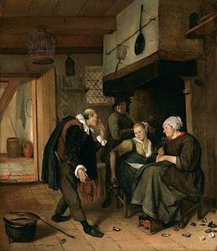

Gittin 71 - A deaf-mute
If one became mute and they asked him, "Shall we write a get for your wife?" and he nodded his head, they test him six times with questions requiring "yes" or "no" in random order. If he answers all questions correctly, they may write and give a get.
A person born deaf-mute is presumed to lack clear understanding and can not contract a biblically binding marriage. Rabbinical enactments validated his marriage and divorce. Therefore, if his brother marries a woman and dies, and the wife falls to him in a levirate marriage, he lacks the legal power to divorce.